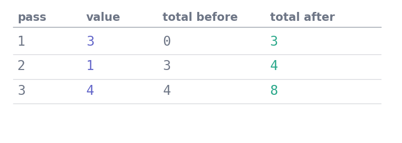

score = 68.4
if score >= 70:
print("distinction")
elif score >= 50:
print("pass")
else:
print("below the pass mark")passPython · Unit 4
Why this unit is here
So far your programs have run straight down the page. Two constructions change that, and between them they cover almost everything a program does: choosing between alternatives, and repeating work over many values.
Everything from cleaning a column to fitting a model is built from these. The skill worth acquiring here is not the syntax, which is small, but the habit of tracing what a loop does before you run it.
You should be able to:
Quick check. What does len([10, 20, 30]) give, and what is the index of its last item?
3, and the last index is 2. Length counts items; indices start at zero, so the last index is always len(...) - 1. Off-by-one errors live in that gap.
A condition is an expression that evaluates to True or False, and it decides which block of code runs:
score = 68.4
if score >= 70:
print("distinction")
elif score >= 50:
print("pass")
else:
print("below the pass mark")passTwo things to notice, because both are Python-specific.
Indentation is syntax. The four spaces are not decoration — they are how Python knows which lines belong to which branch. Get them wrong and the meaning changes, or the file will not parse at all.
elif chains are checked in order, and stop at the first match. A score of 75 satisfies both >= 70 and >= 50, but only the first branch runs. That is why the tests must be written from most to least demanding; reverse them and everything above 50 becomes a pass.
n = 57
print(n > 50, n == 57, n != 57, 50 <= n <= 100)
print(n > 50 and n < 60)
print(n < 50 or n > 100)
print(not n > 50)True True False True
True
False
False== compares, = assigns. Confusing them is a syntax error in a condition, which is fortunate — in some languages it silently assigns instead.
50 <= n <= 100 chains, and reads exactly as it looks. That is unusual among programming languages and worth using.
for — repeat once per itemscores = [68.4, 55.1, 72.0]
for score in scores:
print(score, "→", "pass" if score >= 50 else "fail")68.4 → pass
55.1 → pass
72.0 → passThe name score is created fresh on each pass, taking each value in turn. You do not manage an index and you cannot run off the end.
Three helpers you will use constantly:
groups = ["Computing", "Life sciences", "Engineering"]
counts = [69, 57, 36]
for position, name in enumerate(groups, start=1):
print(position, name)
print()
for name, count in zip(groups, counts):
print(f"{name:<16} {count}")1 Computing
2 Life sciences
3 Engineering
Computing 69
Life sciences 57
Engineering 36enumerate gives you the position alongside the item. zip walks two sequences together — and stops at the shorter one, silently, which is worth remembering.
while — repeat until a condition changesremaining = 100.0
halvings = 0
while remaining > 1.0:
remaining = remaining / 2
halvings += 1
print(f"{halvings} halvings to get below 1.0, ending at {remaining:.4f}")7 halvings to get below 1.0, ending at 0.7812Use for when you know what you are iterating over, and while when you are waiting for a condition. The danger of while is that something in the loop must change the condition — if remaining never shrank, this would run forever. Interrupt a runaway loop with Control-C.
This is the habit that matters. Take a loop and write down what each name holds after each pass:

for value in [3, 1, 4] accumulating a running total. Writing the state after each pass turns a loop from something you hope works into something you have checked.
total = 0
for value in [3, 1, 4]:
total = total + value
print(total)8Three lines of paper, and you knew the answer before the machine did. Do this whenever a loop surprises you.
A very common loop shape — build a new list by transforming or filtering an old one — has a shorthand:
scores = [68.4, 42.0, 72.0, 55.1, 38.5]
passed = [s for s in scores if s >= 50]
rounded = [round(s) for s in scores]
print(passed)
print(rounded)[68.4, 72.0, 55.1]
[68, 42, 72, 55, 38]Read [s for s in scores if s >= 50] as “s, for each s in scores, where s is at least 50”. It does exactly what the equivalent loop does:
passed_long = []
for s in scores:
if s >= 50:
passed_long.append(s)
print(passed_long == passed)TrueUse a comprehension when it fits on one line and reads as a sentence. When it needs two conditions and a nested loop, write the loop — a comprehension that has to be decoded is worse than the four lines it replaced.
break and continuefor value in ["68.4", "", "72.1", "stop", "55.0"]:
if value == "":
continue # skip this one, carry on
if value == "stop":
break # leave the loop entirely
print(float(value))68.4
72.1Classifying the cohort, and counting what you could not classify.
import csv
from pathlib import Path
rows = list(csv.DictReader(Path("../data/cohort.csv").open()))
bands = {"distinction": 0, "merit": 0, "pass": 0, "below": 0}
unusable = []
for row in rows:
raw = row["final_score"]
if raw == "":
unusable.append((row["student_id"], "no score recorded"))
continue
score = float(raw)
if not 0 <= score <= 100:
unusable.append((row["student_id"], f"impossible score {score}"))
continue
if score >= 70:
bands["distinction"] += 1
elif score >= 60:
bands["merit"] += 1
elif score >= 50:
bands["pass"] += 1
else:
bands["below"] += 1
for name, count in bands.items():
print(f" {name:<12} {count:>3}")
print(f"\n classified {sum(bands.values())} of {len(rows)}")
for student, reason in unusable:
print(f" excluded {student}: {reason}") distinction 69
merit 103
pass 60
below 6
classified 238 of 240
excluded S0018: no score recorded
excluded S0189: impossible score 187.0Three things in that loop are deliberate and worth copying.
The continue cases come first, before any arithmetic. A value you cannot use should leave the loop body before it can contaminate anything.
Every exclusion is recorded with a reason, not just counted. “Two rows dropped” invites the question “which, and why?”; this answers it in advance.
And the bands are checked from highest to lowest, because elif stops at the first match. Written the other way round, every score above 50 would land in pass and the top two bands would always be zero.
Exercise 1 Trace this on paper before running it. What does it print?
total = 0
for i in range(1, 5):
total += i
print(i, total)1 1
2 3
3 6
4 10range(1, 5) gives 1, 2, 3, 4 — it starts at 1 and stops before 5, the same exclusive-end convention as slicing. total += i is shorthand for total = total + i.
Exercise 2 This is meant to report every score band. Why does it always print pass for anything above 50?
if score >= 50:
print("pass")
elif score >= 60:
print("merit")
elif score >= 70:
print("distinction")An elif chain stops at the first true condition. A score of 85 satisfies >= 50, so it prints pass and the later branches are never reached.
The fix is to order the tests from most to least demanding — >= 70, then >= 60, then >= 50 — so the first one that matches is the right one.
A useful check: if any branch of an elif chain can never run, the ordering is wrong.
Exercise 3 Rewrite as a comprehension, then say whether you would keep it.
long_names = []
for name in groups:
if len(name) > 10:
long_names.append(name.upper())long_names = [name.upper() for name in groups if len(name) > 10]Whether to keep it is a judgement, and the honest answer here is yes: it fits on one line and reads as a sentence — “name uppercased, for each name in groups, where the name is longer than ten characters”.
If it needed a second condition and a nested loop, the four-line version would be clearer. Brevity is not the goal; being read correctly on the first pass is.
Two checks that catch the two commonest loop bugs.
Did every item get accounted for? A loop that filters should conserve the total:
values = [68.4, 42.0, 72.0, 55.1, 38.5]
kept = [v for v in values if v >= 50]
dropped = [v for v in values if v < 50]
assert len(kept) + len(dropped) == len(values)
print(f"kept {len(kept)}, dropped {len(dropped)}, of {len(values)}")kept 3, dropped 2, of 5If a value could satisfy both conditions or neither, this assertion fires — and that is exactly the elif-ordering bug from Exercise 2, caught automatically.
Does the while condition actually change? Add a guard while developing:
remaining, steps = 100.0, 0
while remaining > 1.0:
remaining /= 2
steps += 1
assert steps < 1000, "loop is not converging — check the update"
print(f"finished in {steps} steps at {remaining:.4f}")finished in 7 steps at 0.7812The assertion costs nothing and turns an infinite loop into an immediate, readable failure. Remove it once the logic is settled, or leave it in — a bound you can justify is documentation.
Where this usually goes wrong
elif chain from least to most demanding>= 50 placed first captures everything. If a branch can never run, the order is wrong.
range(a, b) excludes brange(1, 5) gives four numbers, not five. It is the same convention as slicing, and it makes adjacent ranges join up cleanly.
while whose condition never changeszip complains about unequal lengthsAnswers are at the foot of the page.
How many numbers does range(2, 8) produce?
continue and break?zip([1, 2, 3], ["a", "b"]) — how many pairs, and what happened to the 3?while body change the condition?(b) 6 — 2, 3, 4, 5, 6, 7. It starts at 2 and stops before 8.
continue abandons the current pass and moves to the next item; break leaves the loop entirely and carries on with the code after it.
Two pairs. zip stops at the shorter sequence, so the 3 is silently dropped. If that would be a bug, assert the lengths match first.
Because the condition is re-tested before every pass. If nothing in the body moves it towards False, the test never changes and the loop never ends.
The order of the elif chain. If a less demanding test sits above a more demanding one, the top band is unreachable — every qualifying value is caught by the earlier branch.